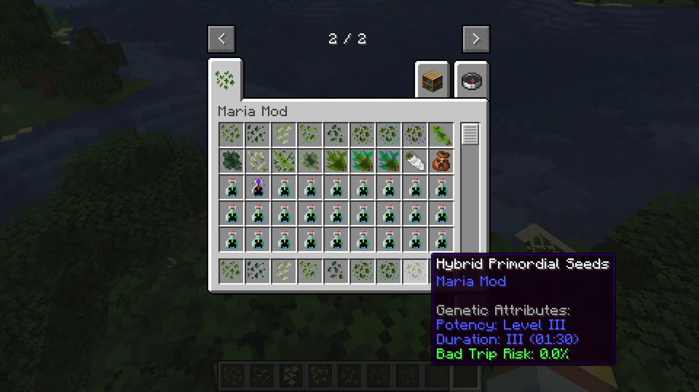
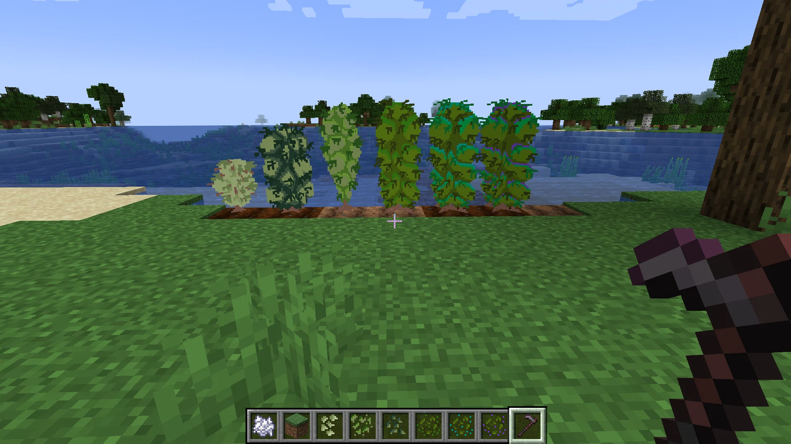
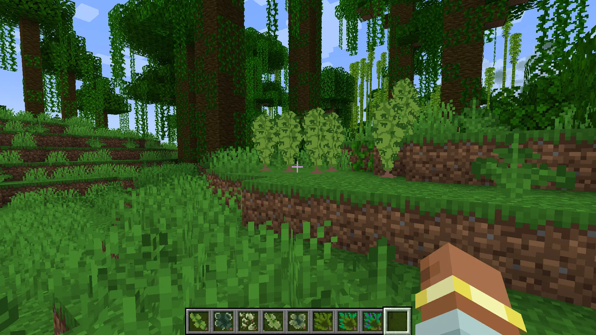
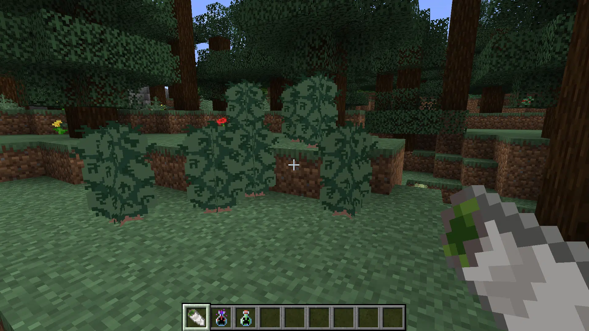

¿De qué trata el mod?
Mariamod introduce mecánicas profundas de agricultura enfocadas en la genética de las plantas. En lugar de plantar y cosechar de forma tradicional, vas a poder cruzar diferentes variantes silvestres (como la Indica o la Ruderalis), experimentar con sus características y mejorar los cultivos generación tras generación dentro de tu mundo de Minecraft.
Diseñado originalmente para jugar con amigos, prioriza la exploración de biomas, la recolección estratégica y la progresión agrícola.
Galería del mod

Proceso de inventario y genética.

Cultivos silvestres en su hábitat natural.

Variedad Sativa desarrollada.

Variedad Indica en crecimiento.
Elegí tu versión de Minecraft
Seleccioná la versión de tu juego para descargar el archivo .jar correspondiente:
Cargando versiones disponibles…
Cambiar de versión
Versión estable
Pre-releases (versiones de prueba)
¿Cómo instalarlo?
- Instalador de NeoForge correspondiente a la versión de tu Minecraft (por ejemplo, la 1.21.1 pide Java 21).
- Descargá el archivo
.jardel mod desde esta página. - Presioná las teclas
Win + Ren tu PC, escribí%appdata%\.minecraft\modsy pulsá Enter. - Copiá el archivo descargado adentro de esa carpeta
mods. - Abrí tu Minecraft Launcher, elegí el perfil de NeoForge e inicia el mundo
Aclaración sobre seguridad y contenido
¿Desconfiás de descargar archivos o mods de internet? Es completamente normal. Por eso este mod es 100% de código abierto (Open Source) bajo licencia MIT. Al no ser un software cerrado, cualquier persona con conocimientos puede auditar cada línea de código para verificar que está totalmente libre de código malicioso.
Nota sobre la temática: El mod aborda ficción sobre cultivo dentro del juego y no busca promover ninguna sustancia en la vida real. Si sos desarrollador y querés ver el código profundo, aportar mejoras o pasarlo a otros cargadores (como Fabric), revisá el README del repositorio en GitHub.